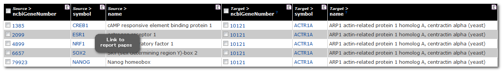
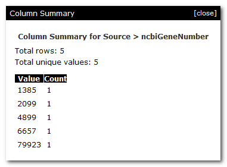
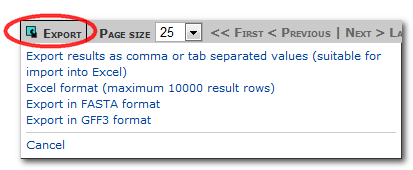
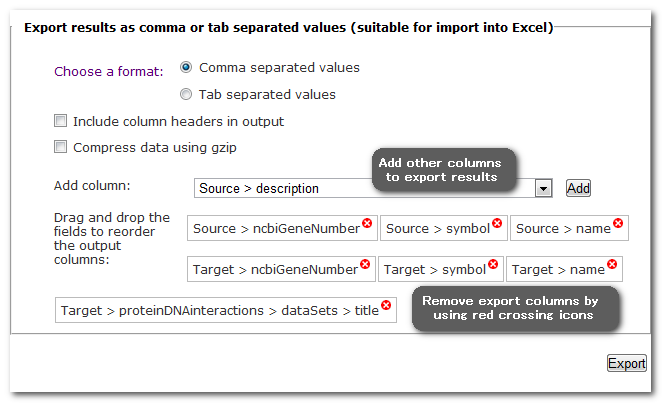
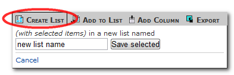
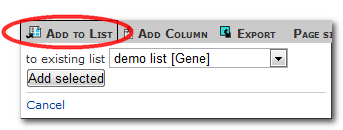
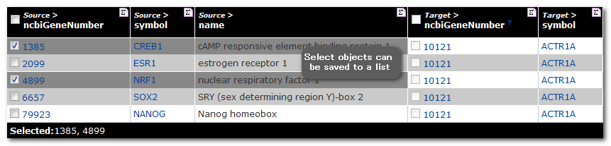
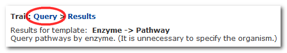
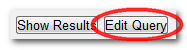

The basics
The results for the template 'Gene(s) -> Upstream Transcription Factors' shows the source(upstream) gene, target(downstream) genes and dataset names.

Summary buttons ![[icon]](sigma.png) at the top of each column allow you to view some
summary statistics. For names and identifiers it will tell you about
unique values, numerical data gives the min, max, mean and standard
deviation. In case of the example above, the summary button for the
column 'Source > ncbiGeneNumber' shows you the number of upstream genes
in the results table. (Note: it only shows the first 10 rows of summary).
at the top of each column allow you to view some
summary statistics. For names and identifiers it will tell you about
unique values, numerical data gives the min, max, mean and standard
deviation. In case of the example above, the summary button for the
column 'Source > ncbiGeneNumber' shows you the number of upstream genes
in the results table. (Note: it only shows the first 10 rows of summary).

Exporting and saving results
- All results pages have a number of export options:

Currently, either the entire results table or specific columns can be exported. For removing or adding columns, you can customise the export columns before you export the results table.

- Results pages also allow you to save your data to a new list or add them to an existing list:


Select the required data and either add it to an existing list or save it to a new list. Selecting the check boxes next to the column headings will select the entire column for saving. Alternatively, individual items can be saved by selecting check-boxes next to the items. Currently, a list can only contain one column. However, if you have multiple columns for the same item (eg a column for gene identifier and one for gene symbol), all related columns become highlighted when you select the checkbox next to one. This is because you are saving the actual item (eg the gene) to a list, not just the identifier.

Changing the output
To change the output of the results table, click on 'query' at the top of the results page:
.This will display the template form again, and
|  | will display the template query in the TargetMine Query Builder. |